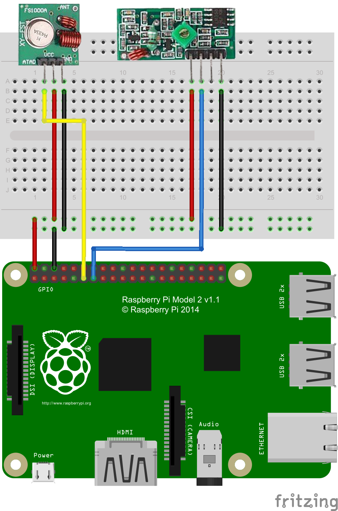
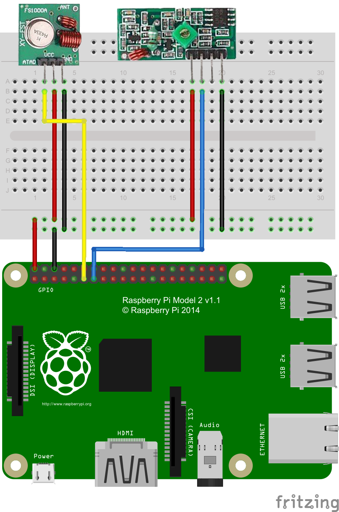

Radio frequency (433/315Mhz) transmiter and reciver
Connect radio modules:  (Any other GPIO pin can be used for data)
Install WiringPi lib:
sudo apt-get update
sudo apt-get install wiringpi
Connect radio modules:  (Any other GPIO pin can be used for data)
Install WiringPi lib:
sudo apt-get update
sudo apt-get install wiringpi
From here you can search these documents. Enter your search terms below.
| Keys | Action |
|---|---|
| ? | Open this help |
| n | Next page |
| p | Previous page |
| s | Search |